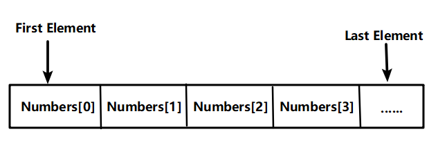
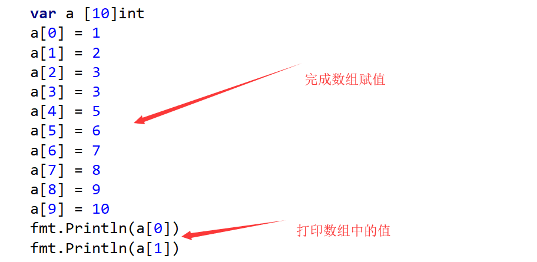

7.2：数组
如果要存储班级里所有学生的数学成绩，应该怎样存储呢？可能有同学说，通过定义变量来存储。但是，问题是班级有80个学生，那么要定义80个变量吗？
像以上情况，最好是通过数组的方式来存储。
所谓的数组：是指一系列同一类型数据的集合。
7.2.1数组定义
var a [10]int
数组定义也是通过var关键字，后面是数组的名字a，长度是10,类型是整型。表示：数组a能够存储10个整型数字。也就是说，数组a的长度是10。
我们可以通过len( )函数测试数组的长度，如下所示：
var a [10]int
fmt.Println(len(a))
当定义完成数组a后，就在内存中开辟了10个连续的存储空间，每个数据都存储在相应的空间内，数组中包含的每个数据被称为数组元素（element），一个数组包含的元素个数被称为数组的长度。
注意：数组的长度只能是常量。以下定义是错误的：
var n int = 10
var a [n]int
7.2.2数组赋值
数组定义完成后，可以对数组进行赋值操作。
数组是通过下标来进行操作的，下标的范围是从0开始到数组长度减1的位置。

var a[10] int 表示的范围是a[0],a[1],a[2].......,a[9]
完成对数组赋值的第一种方法：

如果现在给a[10]=29,会出现什么情况呢？
但是这种赋值方式比较麻烦，所以可以使用第二种赋值方式，如下所示：
var a [10]int
for i := 0; i < 10; i++ {
a[i] = i + 1
}
for i := 0; i < 10; i++ {
fmt.Println(a[i])
}
通过for循环完成数组的赋值与输出。注意：循环的条件，如果将循环条件修改成i<=10是否正确
在上一节中，我们说过可以通过len( )函数来获取数组的长度，所以也可以对上面的程序，进行如下的修改：
var a [10]int
for i := 0; i < len(a); i++ {
a[i] = i + 1
}
for i := 0; i < len(a); i++ {
fmt.Println(a[i])
}
对数组中的数据输出，也可以使用range.如下所示：
for i,data := range a {
//fmt.Println("下标：",i)
fmt.Println("元素值：",data)
i变量存储的是数组的下标，data变量存储的是数组中的值。
如果只想输出数组中的元素值，不希望输出下标，可以使用匿名变量
for _,data := range a {
//fmt.Println("下标：",i)
fmt.Println("元素值：",data)
上面的案例中，首先完成了数组的赋值，然后再输出数组中的值。但是，如果定义完成数组后，没有赋值，直接输出会出现什么样的问题呢？
var a [10]int
for i := 0; i < len(a); i++ {
fmt.Println(a[i])
}
a数组中的元素类型是整型，定义完成后，直接输出，结果全部是0.
当然数组中存储的元素类型也可以是其它类型，如下所示：
var a [10]float64 //如果不赋值，直接输出，结果默认全部是0
var a [10]string //如果不赋值，直接输出，结果默认全部是空字符
var a [10]bool //如果不赋值，直接输出，结果默认全部是false.
7.2.3数组初始化
上一小节中，首先先定义数组，然后再完成数组的赋值。其实，在定义数组时，也可以完成赋值，这种情况叫做数组的初始化。
具体案例如下：
//数组初始化
//1.全部初始化
var a [5]int = [5]int{1,2,3,4,5}
fmt.Println(a)
//自动推导
b := [5]int{1,2,3,4,5}
fmt.Println(b)
//部分初始化
//没有初始化的部分 默认为0
c := [5]int{1,2,3}
fmt.Println(c)
//指定某个元素初始化
d := [5]int{2:10,4:20}
fmt.Println(d)
//... 通过初始化确定长度
f:=[...]int{1,2,3}
fmt.Println(len(f))